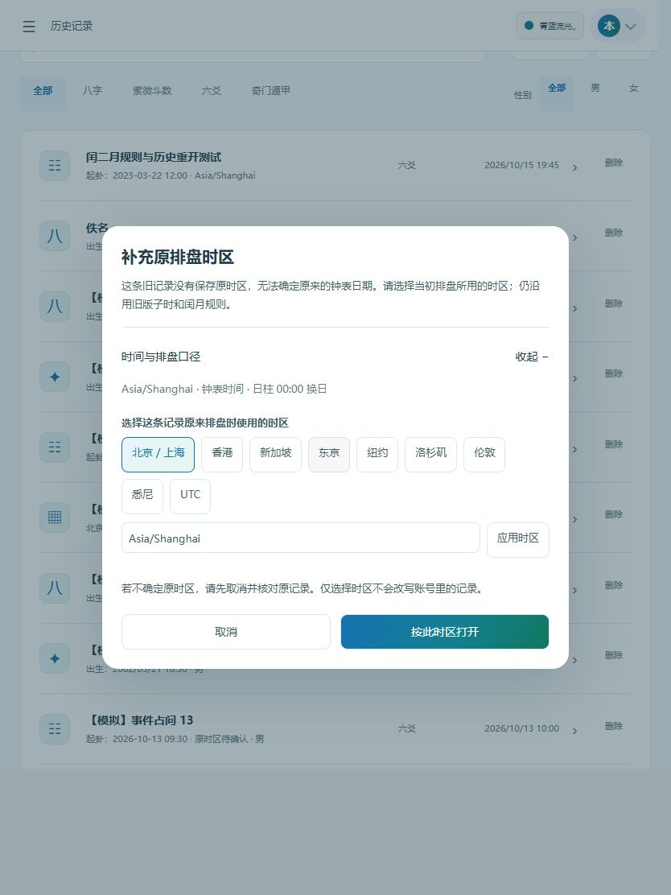

CALENDAR CONVENTIONS · 2026 / 10 / 15
同一张盘，换设备也保留原来的时间与规则
本次修复八字与六爻的设备时区依赖，保留原默认，提供子时和时间起卦规则切换，并让保存、历史重开和 AI 携盘使用同一份排盘口径。
333 项自动测试通过 · 类型检查通过 · H5 正式构建通过
新盘：保留默认，可明确切换
| 范围 | 保留的默认 | 可切换 |
|---|
| 八字 / 六爻日柱 | 00:00 换日 | 23:00 换日 |
| 六爻时间起卦年支 | 立春换年 | 春节换年 |
| 六爻时间起卦闰月 | 原月数加 12 | 按原月数 |
默认晚子时的日柱仍用当日，时干按次日日干；23 点模式下时间起卦农历日期进入次日，但立春年支仍按实际节气判断。八字按节气定年、月，不采用闰月分半规则。
旧盘：证据不足就不猜
- 新记录保存时区、钟表时间、UTC 偏移、规则、算法版本，打开时沿用保存口径。
- 旧记录有精确到秒的钟表快照，可恢复当时固定偏移；只有分钟标签或时间戳，须确认原时区。
- 旧本地六爻缓存若连时间戳都未保存，确认时区后保留原盘快照，并注明时间仅精确到分钟。
- 不支持的规则版本拒绝重算；打开旧盘不会直接改写账号记录。
- 完整历史列表与“最近探索”均使用原盘时间，未知原区明确标记。
独立算法对比
四柱及农历基准为 hkargv/paipan 固定提交，未修改基准源码；六爻装卦基准为 术数排演的纯算法模块，外部源码均记录 SHA-256。执行的是当前正式页面使用的计算代码。
主矩阵包含 1900—2099 年内 23 个日期、7 个时刻、4 个输入时区（上海、纽约、伦敦、加德满都），并切换上海、纽约、UTC 三种设备时区。覆盖春节、闰月首尾、2033/2034 年历法、子时和夏令时年份；DST 缺失/重复时刻另有定向回归测试。
仍保留的流派差异：4,096 组中有 3,200 组的“变卦六亲”与外部库不同。项目沿用本卦宫五行，对方取变卦宫五行；本次未改变此规则，也未将差异计入一致项。
边界说明：保留现有“所选时区钟表时间”排法，不校正真太阳时；没有改成统一瞬时下的全球交节天文排法。两套历法实现有寿星算法渊源，样本一致不代表所有流派或节气秒级天文精度均获证明。
实际发现并修复的边界问题
- 八字、六爻不再通过设备本地日期字段计算；日柱、旬空和六神统一使用所选日界。
- 23 点切到下一农历日时，不能顺带提前推进尚未发生的立春年支。
- 1900 年上海偏移含秒：旧记录仅有分钟标签时，猜整分钟时差可能跨立春，现要求原时区。
- 只有分钟、没有原始时间戳的旧缓存，不能凭分钟重算节气边界，现保存并重放原盘快照。
- 节气附近出现空幼年大运段时，流月展示不再报错；流时按钟面时间生成，设备夏令时切换不会重复或遗漏时辰。
- 缓存恢复先验证版本与时刻一致性；未知版本保留原数据。
26 项新增定向回归包含先失败、修复后通过的复现测试。另有独立只读复核，已修复其发现的历史保真问题。
手机 / 平板流程与证据范围
检查 320 × 740、390 × 844、834 × 1112 视口。手机完成八字纽约子时规则、六爻闰二月规则的排盘 → 保存 → 历史重开 → 携盘对话；平板及窄屏检查旧记录时区确认、按钮换行和盘面，无页面横向溢出。
浏览器使用正式前端真实排盘算法，账号保存和对话接口来自隔离的本地 UI 模拟服务，回复为固定流式内容。本次不据此声称真实数据库、真实 AI 模型或生产接口已经联调通过。
390px 手机 · 原月数 / 春节年支规则保留
834px 平板 · 旧记录补充原时区
复验入口
手机规则选择界面 · 修复前的网站算法对比
独立对比结果 · 基准来源与 SHA-256 · 测试范围与限制 · 333 项测试日志
项目根目录执行 node docs/calendar-context-fix-2026-10-15/prepare-sources.cjs 下载并校验外部纯算法源码，再执行 node docs/calendar-context-fix-2026-10-15/verify.cjs 重新对比。已有校验通过的源码会复用；若上游 main 变动，脚本拒绝接受不同哈希，不自动更新基准。
完整回归：frontend-docker 内执行 node --test --test-reporter=tap tests/*.test.cjs。构建使用现有 VITE_BUILD_PROGRESS=false 开关，避免进度插件写只读共享依赖目录，未改变编译和压缩流程。本报告记录本地验证，尚未部署到生产环境。